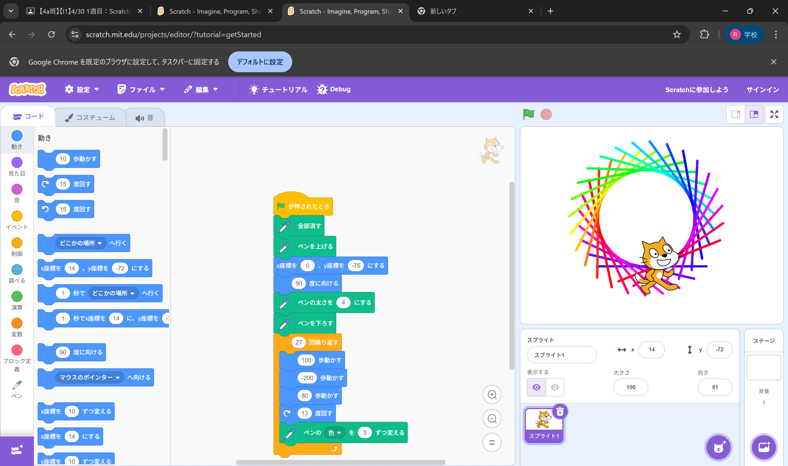
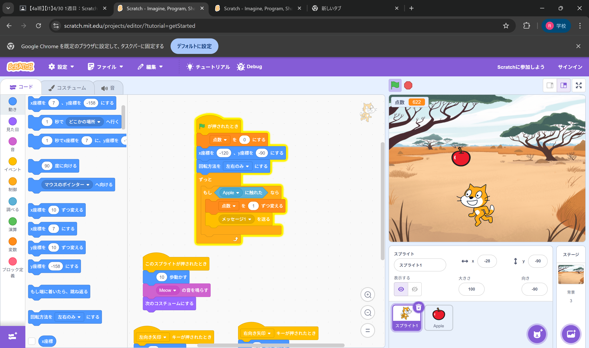

1週目のレポート ： 公大高専１年実習I-1
4組25番 西岡 挑志
第1週目
1-1 サイエンスアート

1.内容
ペンと猫のスプライトを使っていろいろな色の円のようなものを書きました。値を変えるとまた違った形になります。 2.感想
説明されたとおりに配置していくだけだったけれど値を変えたり順番を変えたりすると全く違った形になって面白かったです。
1-2 ゲーム

1.内容
猫のスプライトだけでなく、りんごのスプライトを追加して、そのりんごを落とすことによってりんごを拾うゲームを作りました。 2.感想
説明通りに配置していくだけだったけれど、速度や大きさなどいじれるところが多くて円を書くやつより面白かったです。
1-3 ホームページ作成
私のホームページ
1.内容
ギットハブを使い自分だけのオリジナルの自己紹介ページを作り、内容を自分のものに変更しました。いろんな文字が並んでおり難しそうでした。 2.感想
いろんな文字が並んでおりよくわからなかったけれどよく見たら変更するところはわかりやすく、変更しやすかったです。
各ページへのリンク
1週目のレポート
2週目のレポート
3週目のレポート
私のホームページ